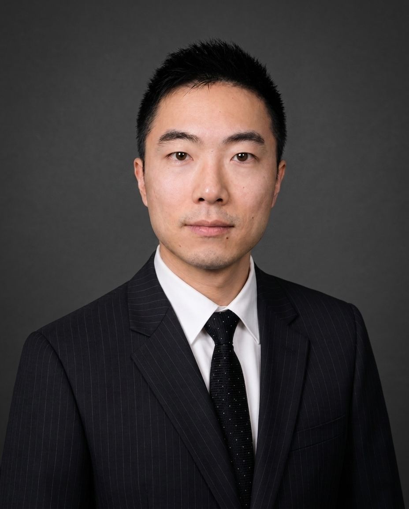
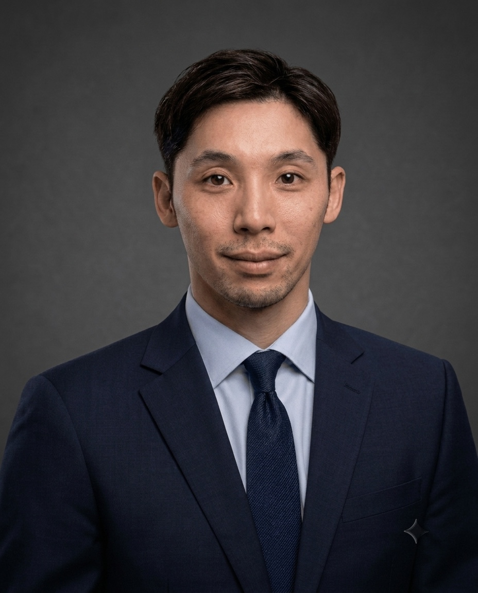
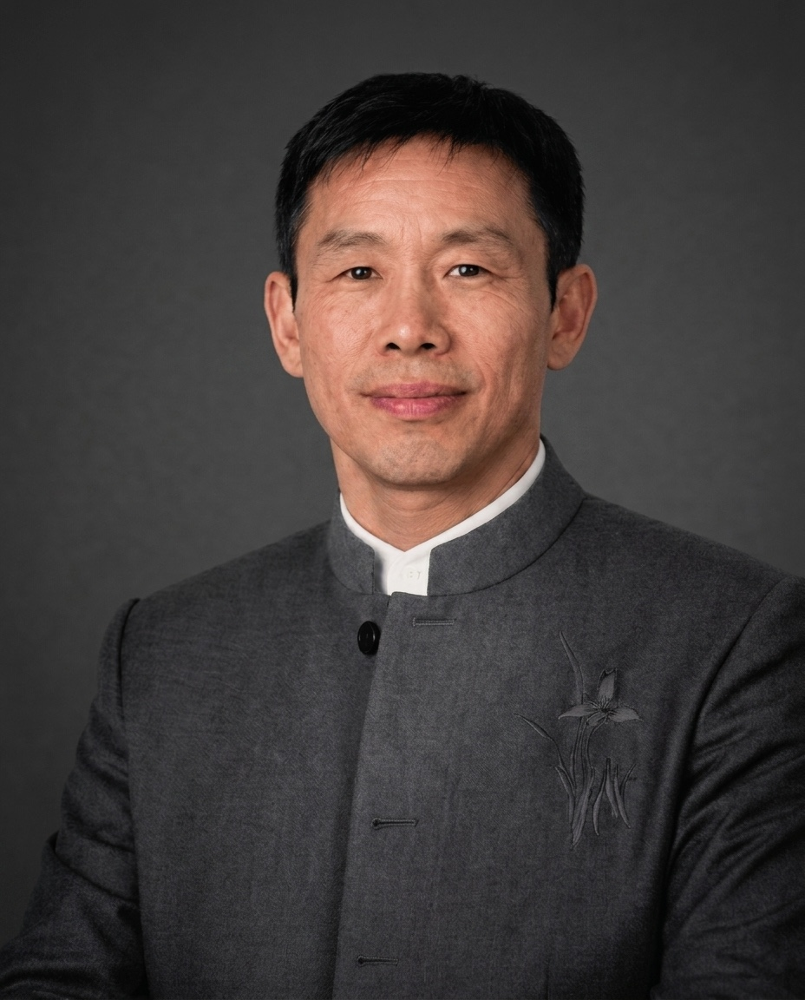
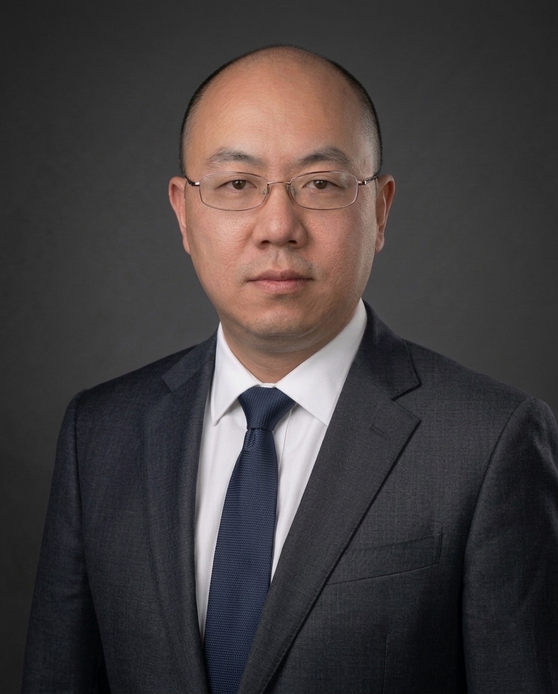
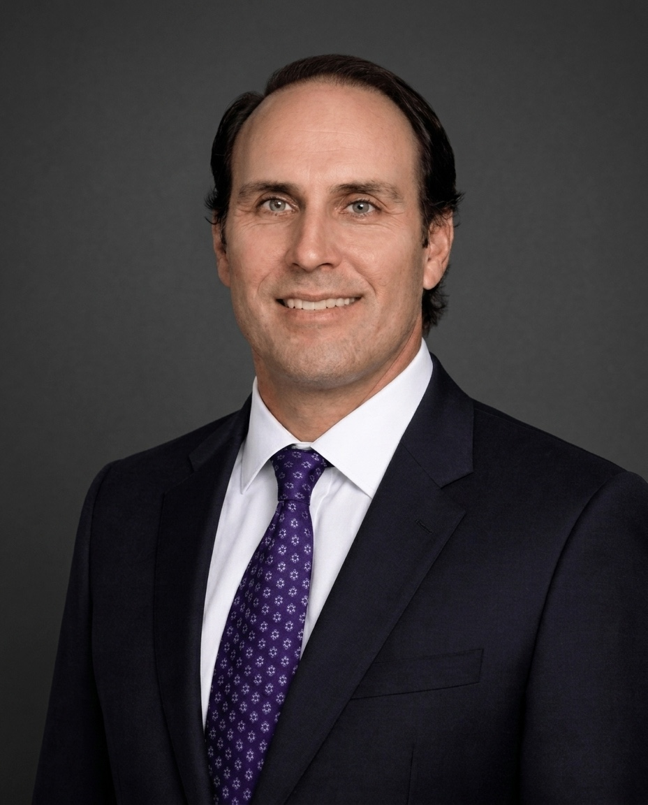
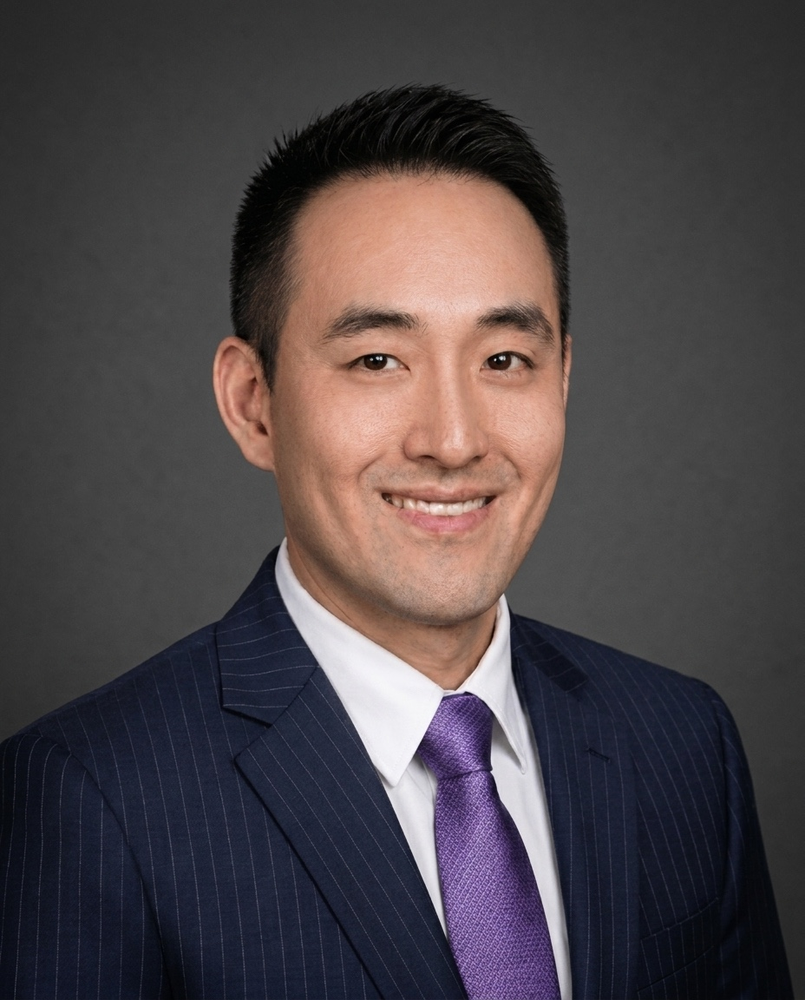
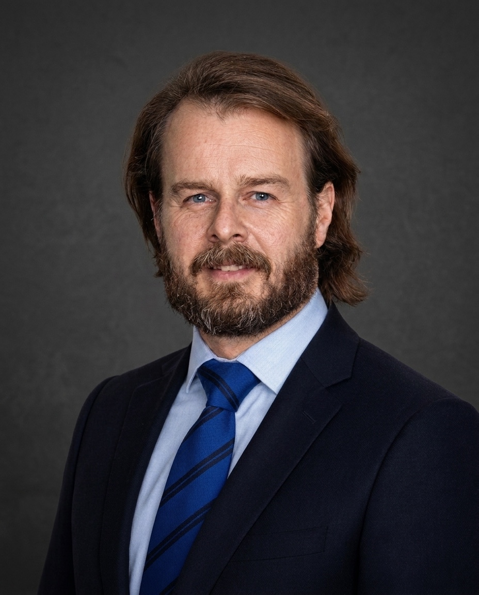
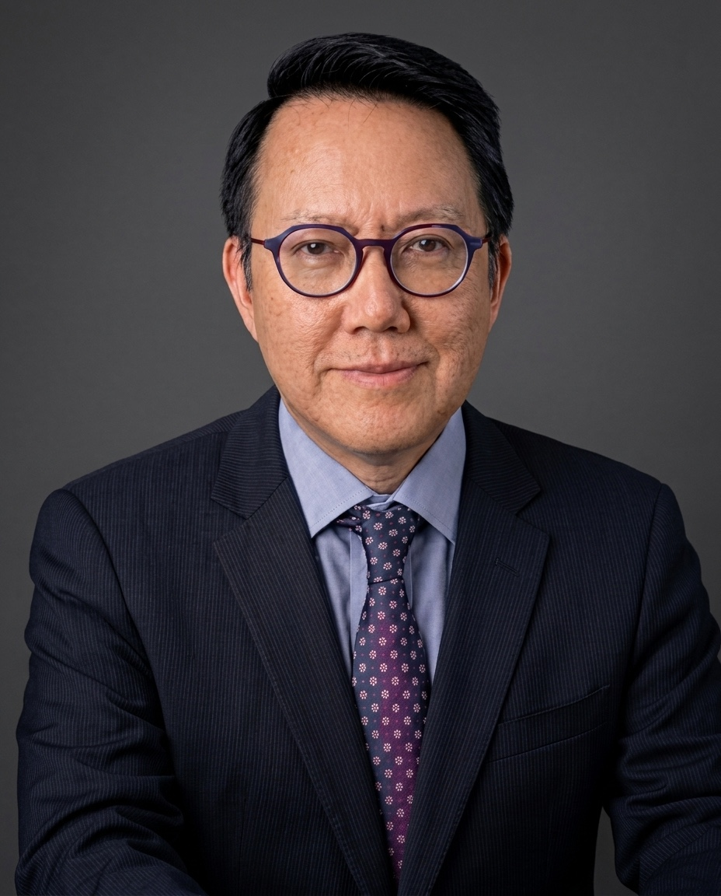

资深合伙人共事年期
领导层与投资
涵盖新岸资本中国私募信贷平台的寻源、承销、法律架构及投资组合执行。

方杰明
管理合伙人兼创始人
LinkedIn
方杰明用逾二十年时间打造了如今中国经验最丰富的机构级私募信贷平台。他于 2016 年创立 ShoreVest Partners，并带领 Shoreline Capital 的核心高级团队加入。Shoreline Capital 由他于 2004 年共同创立，并在其领导下发展为中国市场最早实现机构化规模的私募信贷管理人之一。横跨两个平台，他代表全球主权财富基金、养老金、保险公司、大学捐赠基金及家族办公室，监督部署超过 20 亿美元的中国私募信贷资本。
方杰明参与中国困境债务市场的时间，甚至早于这一市场真正成形之时。任职 O’Melveny & Myers 律师事务所期间，他参与了中国最早的大规模外资困境贷款组合收购交易之一。其后，他于芝加哥大学取得法学博士及工商管理硕士学位，并在仍为学生期间参与了自己的首批中国信贷交易。在全职投身投资管理前，他曾共同创办两家公司，并将其出售给上市公司。
二十多年来，方杰明直接与中国银行、借款人、法院、监管机构及政府官员合作，参与数以千计的困境资产交易。近三十年来，他一直能够熟练使用中文进行口头及书面交流。他持有美国加利福尼亚州律师执照，并为 ShoreVest 投资委员会成员。

梅翠
合伙人
LinkedIn
梅翠是 ShoreVest 的创始合伙人之一，也是中国私募信贷投资领域最具经验的实务人士之一。她于 2016 年共同创立 ShoreVest 前，曾在 Shoreline Capital 担任合伙人八年，其在该市场的连续从业纪录可追溯至中国机构化私募信贷仍处于定义与成形阶段之时。
在 ShoreVest，梅翠共同领导 ShoreVest Asset Solutions。该平台是公司的自有债务服务平台，也是其在中国不良贷款投资中的基础性竞争优势之一。她的投资经验覆盖完整交易流程，包括项目寻源、尽职调查、交易结构设计、收购与谈判、投后监控及退出。她曾监督多宗交易的成功完成，经验贯穿中国信贷周期的各个阶段。职业生涯早期，她曾于 Morningstar 担任基金分析师，为中国机构客户构建债券及股票投资组合。
她于 2018 年获得 CFA 特许资格，持有南京大学经济学硕士学位及合肥工业大学经济学学士学位，并为 ShoreVest 投资委员会成员。

郑慧
合伙人
LinkedIn
郑慧为 ShoreVest 带来了法律专业与投资经验兼备的背景。即使在中国专业化困境信贷市场中，这样的经历亦属少见。她的职业生涯始于广东一家律师事务所，作为执业律师专注于不良贷款资产的清收与处置。这正是 ShoreVest 在每一笔交易中都要处理的核心法律领域。她在该领域的研究成果亦曾公开发表，包括论文《Negative Impacts the New Bankruptcy Law has on the Liquidation of Non-performing Assets》。
她于 2008 年加入 Shoreline Capital 的高级团队，担任合伙人八年，并于 2016 年共同创立 ShoreVest。在 ShoreVest，她与梅翠共同领导 ShoreVest Asset Solutions，其投资职责覆盖完整信贷生命周期，包括项目寻源、尽职调查、结构设计、主动管理及退出。她的法律训练，使其在分析 ShoreVest 投资组合中的交易对手风险、执行机制及监管敞口时，具备独特视角。
她持有中山大学法学院涉外经济法法学硕士学位及南昌大学法学学位，并为 ShoreVest 投资委员会成员。

毕凤笙
合伙人兼首席财务官
LinkedIn
毕凤笙自 ShoreVest 于 2016 年成立以来一直担任首席财务官，并自 2008 年起担任其前身 Shoreline Capital 的首席财务官。近二十年来，她始终深耕同一投资平台，搭建并领导了支撑逾 20 亿美元中国私募信贷资本部署、管理及处置的财务基础设施。
她的职责覆盖 ShoreVest 基金运营的完整周期，包括财务报告、资金管理、税务、现金管理，以及已投项目的财务管控。在加入 Shoreline Capital 前，她负责 AIG 中国财产及意外险业务的财务工作，职责包括财务报告、资金管理、税务及预算。此前，她亦曾任职于加拿大皇家银行及中信保诚人寿保险有限公司。
毕凤笙为英国特许公认会计师公会资深会员（FCCA），亦为 CPA Canada 会员，并持有原 Certified General Accountant 资格。她持有广东外语外贸大学国际贸易学士学位，并为 ShoreVest 投资委员会成员。

蒋姗娟
合伙人
LinkedIn
蒋姗娟是 ShoreVest 合伙人，专注于投资者策略、机构关系及公司更广泛的资本市场布局。她在大中华区另类投资领域拥有逾十七年经验，职业经历横跨私募股权投资组合管理、跨境基金策略，以及在多家投资中国的重要机构平台从事另类投资咨询。其经历包括在 CalPERS 管理大中华区私募股权敞口、任职于 Franklin Templeton China，以及中国国际金融股份有限公司（CICC）。
她曾同时从资产配置方与管理人两侧观察大中华区另类投资市场，因此对机构投资者的真实要求，以及投资平台必须兑现的能力，具备独特理解。她曾与管理数十亿美元中国公募及私募市场敞口的机构合作。
蒋姗娟在 ShoreVest 位于中国的投资运营与北美机构资本之间，发挥关键桥梁作用。她持有加州大学洛杉矶分校机械工程博士学位、加州大学戴维斯分校工商管理硕士学位，以及清华大学理学学士学位。

徐琳玲
总法律顾问
徐琳玲担任 ShoreVest 总法律顾问，全面负责公司投资活动及基金运营相关的全部法律事务。她拥有逾十五年专业法律经验，业务重点为另类投资法律尽职调查。对于一家在中国市场收购结构复杂、层次多重的困境信贷资产的机构而言，这一专业能力至关重要。在投资流程中，她主导法律结构设计与文件工作，管理监管及合规事务，并评估困境与特殊情况信贷承销核心的可执行性与交易对手风险；其参与贯穿投资的完整生命周期，从尽职调查、收购，到处置与退出。
加入 ShoreVest 前，她曾在中国多家红圈律师事务所接受训练并执业。这类律所代表中国本土法律服务市场的顶尖梯队，其交易经验及机构关系构成中国高端法律实务的重要基础。

李宪
资本解决方案总监
LinkedIn
李宪为新岸资本的资本解决方案业务带来逾十年的华尔街投资及顾问经验。他曾任职于 Perella Weinberg Partners，作为投资银行家参与企业重组及特殊情况交易；此前亦曾在花旗担任投资组合经理。他在复杂金融交易的结构设计与执行方面具备深厚经验，尤其擅长应对高复杂度及挑战性的项目，这些能力直接支持新岸资本中国私募信贷策略的实施。

Yao Fu
高级投资经理
Yao Fu 是新岸资本的高级投资经理，在公司拥有逾八年经验，专注于香港及中国西南地区的投资机会。加入新岸资本前，他曾在德勤广州分所担任高级审计师三年，打下扎实的财务分析与风险评估基础。他持有麦考瑞大学专业会计学位，并为英国特许公认会计师公会资深会员（ACCA）。
ShoreVest Asset Solutions
新岸资本的自有债务服务平台 — 在中国各地进行一线寻源、资产服务及困境信贷处置。

杨道平
ShoreVest Asset Solutions 董事总经理
LinkedIn
杨道平是 ShoreVest 自有债务服务平台 ShoreVest Asset Solutions 的董事总经理，负责华东地区业务，并统筹在中国商业信贷活动最活跃市场中的项目寻源与资产服务工作。自 2015 年转入另类投资领域以来，他一直专注于不良贷款、房地产及能源信贷。这些亦是 ShoreVest 中国策略的核心资产类别。
在此之前，杨道平曾于中国石化担任高级管理职务二十年。中国石化是全球最大的能源企业之一；他在任内负责全球及区域供应、定价和交易运营。其二十年中国国有企业基础设施体系内的高级管理履历、由此积累的行业网络，以及十年一线另类投资经验，共同构成其在中国困境资产寻源与处置上的独特优势。
他持有中国人民大学工商管理硕士学位，并曾在乔治亚理工学院学习。

Hongyu Wei
ShoreVest Asset Solutions 董事总经理
LinkedIn
Hongyu Wei 是新岸资本自有债务服务平台 ShoreVest Asset Solutions 常驻北京的董事总经理。他在中国困境资产管理、贷款清收及非流动性信贷领域拥有逾二十年经验，曾任职于野村国际（香港）、德意志银行全球市场特殊投资部、Lone Star Funds、CarVal Investors，以及凯利资产管理 —— 摩根士丹利为服务中国首个外资收购不良贷款组合而设立的本地服务机构。
在新岸资本，魏先生专注于项目寻源、境内借款人沟通、抵押品层面处置，以及覆盖整个中国投资组合的跨境执行机会。他持有对外经济贸易大学金融学硕士学位，并完成 UCLA Anderson 与新加坡国立大学合办的高级工商管理硕士课程。
客户解决方案
负责亚洲及国际市场的投资者沟通、委托讨论及资本拓展。

John Jones
客户解决方案总监（亚洲以外地区）
LinkedIn
John Jones 负责 ShoreVest 在美洲、中东及欧洲的客户拓展与关系管理。他带来逾十五年横跨公募及私募信贷投资策略的经验，曾主导相关业务发展工作。他此前是 PIMCO 金融机构组成员，为保险公司一般账户投资提供资产管理及顾问服务，亦曾在两家新兴系统化另类投资管理人处负责公司战略与募资。
John Jones 持有南加州大学经济学学士学位及芝加哥大学工商管理硕士学位。在攻读本科期间，他曾参与为期两年的中文服务项目。

陈金培
客户解决方案总监（亚洲）
LinkedIn
陈金培于 2024 年 12 月加入 ShoreVest，常驻香港，负责公司在亚洲地区的客户拓展与关系管理。他的职业生涯近二十年，横跨大中华区及东南亚的私募股权、创业投资、战略投资及财务顾问工作。他曾在香港 Ping An Asset Management 协助搭建 Ping An Group 的海外私募股权平台，担任 Fosun Hani Securities 策略发展执行董事，并于 Ant Financial 担任国际投资总监，负责覆盖支付、金融科技及新兴技术的全球投资项目。
最近，他于香港 500 Global 担任策略发展副总监，负责 Southeast Asia Growth Fund 的交易分析、投资者关系及退出策略。
顾问合伙人
为公司及投资委员会提供策略、市场及政策洞察。

张健恩
高级顾问合伙人
LinkedIn
张健恩是 ShoreVest 高级顾问合伙人，就公司运营、机构化基础设施及组织战略提供建议。他于 2017 年 9 月加入 ShoreVest，并参与建立公司在人力资源、信息技术、财务及合规等方面的运营基础。
加入 ShoreVest 前，张健恩曾任 Stamos Capital Partners 及 Prima Capital 董事；更早之前，他在 Bridgewater Associates 从事客户管理工作两年，并于 Cambridge Associates 担任高级咨询专员三年。其经验横跨全球最大对冲基金之一及领先的捐赠基金投资顾问机构，使他能够以高度机构化的视角审视专业另类资产管理人的运营标准。
他持有麻省理工学院斯隆管理学院工商管理硕士学位，以及斯坦福大学经济学学士学位。

杨文斌
高级顾问合伙人
杨文斌为 ShoreVest 带来逾三十年亚洲保险与资产管理领域的机构投资领导经验。他曾在大中华区及亚洲地区的金融行业长期任职，先后于多家中国及日本保险公司主导投资工作，并在 Aetna Life Insurance 与 MassMutual Japan 担任首席投资官等高级职务。
杨文斌现任 Oliver Wyman 大中华区金融服务高级顾问。他还在香港大学中国商业学院担任客座副教授，并在台湾大学金融系担任兼职教师。他著有《财富管理的本质》，于 2022 年出版。他持有台湾大学理学士学位、芝加哥大学工商管理硕士学位，以及斯坦福大学国际投资文凭。

马德宁
高级顾问合伙人
LinkedIn
马德宁是研究中国金融体系最具权威性的英文写作者之一。作为 ShoreVest 高级顾问合伙人兼经济顾问，他与公司的投资委员会合作，研判中国宏观经济环境、商业银行体系状况、不良贷款规模及演变趋势，以及影响公司项目寻源与执行的结构性和监管因素。
马德宁曾在中国从事财经新闻工作十年，其中在北京为 The Wall Street Journal 工作六年，并在上海为 Dow Jones Newswires 工作四年，期间亦为 Far Eastern Economic Review 撰稿。2015 年，他离开中国及 The Wall Street Journal，加入位于华盛顿特区的智库 Woodrow Wilson International Center for Scholars 担任研究员，并在此期间撰写《China’s Great Wall of Debt: Shadow Banks, Ghost Cities, Massive Loans, and the End of the Chinese Miracle》。该书于 2018 年出版。
他此前曾于 Paulson Institute 旗下智库 MacroPolo 担任研究员，研究中国金融体系整治。马德宁中文流利，曾先后在北京及昆明学习中文，之后在 Johns Hopkins SAIS 南京校区以中文学习国际关系一年。

潘夏峯
高级顾问合伙人
LinkedIn
潘夏峯用逾二十年时间在亚洲建立并领导信贷投资平台，其职业轨迹几乎贯穿该地区机构化私募信贷的发展全程。他先后于 Standard Chartered Bank 从事结构化解决方案业务，出任 Société Générale 中国特殊情况业务主管，约十年时间搭建并领导 Ping An 的机构私募信贷投资团队，后于香港担任 The Carlyle Group 亚洲信贷董事总经理。
在 Carlyle 期间，潘夏峯负责领导该公司聚焦大中华区的信贷平台，并于 2022 年底离任。他为 ShoreVest 提供的顾问价值，建立在一套极为完整的经验积累之上，涵盖项目寻源、结构设计、投资组合管理及信贷处置，并横跨中国信贷周期的各个主要阶段。职业生涯早期，他亦曾任职于 BNP Paribas Peregrine 及 Bank of America Merrill Lynch。他持有谢菲尔德大学工商管理硕士学位，并为英格兰及威尔士特许会计师协会准会员（ACA, ICAEW）。